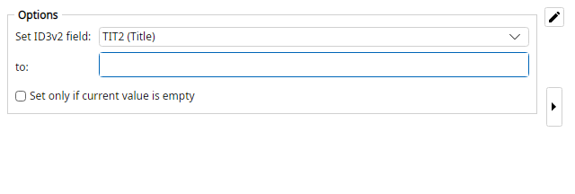

Magic File Renamer Help
ID3v2 Field Setter

Filter options (screenshot optional — capture to images/Id3v2FieldSetter.png).
Sets one modeled ID3v2 text frame on each MPEG/MP3 file. Creates an ID3v2.3 tag when missing; existing tag versions are preserved.
Add multiple instances of this filter to set several frames. Non-MPEG containers show a preview error.
Options
- Field — Which ID3v2 frame to write (Frame ID shown in parentheses).
- Text — Value written to the frame. Empty clears the frame. May use formatter tokens.
- Language / Description — Identity for COMM / USLT / TXXX; leave empty for the primary instance.
- Set only if current value is empty — When checked, skip frames that already have a value.
Examples
(empty TIT2) >>> Blue Moon Revisited
(Year frame) >>> 1990